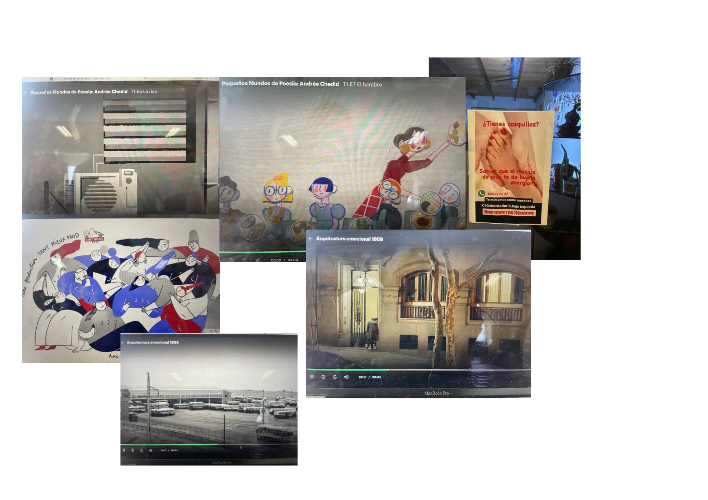

Yo no miro mucho el Instagram ni miro mucho el Tiktok pero cuando lo hago veo que mis amigues mandan cosas, entonces sí que lo miro. En este diario de esta semana ¿qué me han enviado? Y al parecer, yo también he mandado. Las conversaciones a través de estas imágenes se basan en vídeos relajantes, como gatos tiernos o los típicos vídeos donde limpian alfombras y sale mucha espuma, alguna foto de los trabajos de mis amigues artistas y sus referentes, diarios, el perro de Alessandra que tiene cresta, que Andrea se ha ido en bici, cuando buscamos un chandal de leopardo para una fiesta, que el iPhone me ha hecho un vídeo de momentos con Andrea, recomendaciones de pelis, de libros… al final historias que se han hecho parte de nuestra vida al querer tenerlas, aunque sea como fotografías en el móvil, de la misma manera que cosas materiales.
Que yo creía que estaba un poco alejade de aquí. Pero tan dentro como todes, si están mis amigues yo estoy también. Que nos enviamos videos; buaaa tú total tía. Y con este tema de la autorepresentación, analizada desde fuera me veo desde el yo como otre, con registros visuales de lo que soy y de lo que es mi círculo social.
Se supone que el valor propio de una fotografía depende de nuestra aparición en dicha imagen, hemos salido en ella, nos representa, nos incluye de alguna manera. Ser visto por mis amigues aquí. Un starter pack de mi circulo social y mío. Estas historias que resumen como me ven y como veo a les demás.
Estas imágenes que recibo y devuelvo, que ponemos en circulación, hace que nos comprometamos en un vinculo afectivo en la red. El amor en red. Otros lenguajes de amor más. Siento que es en este tipo de vínculo donde reside el valor político de las redes. Porque aunque no utilices mucho los reels de Instagram y envíes imágenes y videos por WhatsApp, sigues enganchado a un espacio donde se te reconoce, donde se dice quien eres (ese gatito abrazado a otro gatito). Este lenguaje afectivo rápido, que nos permite pasar de estar soles a acompañades en cuestión de un send, es donde crece nuestra identidad y vemos crecer la de otres.
Dentro de este cuadro que es Internet, que nos obliga a estar conectados y sentimos el deber de enviar, reenviar…. decir que existimos vaya, a les demás, yo encuentro ternura, al menos desde este diario, porque ya que estoy obligade a extender mi cuerpo y alma en todas estas aplicaciones, me gusta que mi más usada sea WhatsApp. Además, de que entre mi cultura-red visual se encuentren memes sobre estar mejor, libros, los animales de mis amigues, películas de dibujos, fotolibros sobre gatos y podcast queers.
